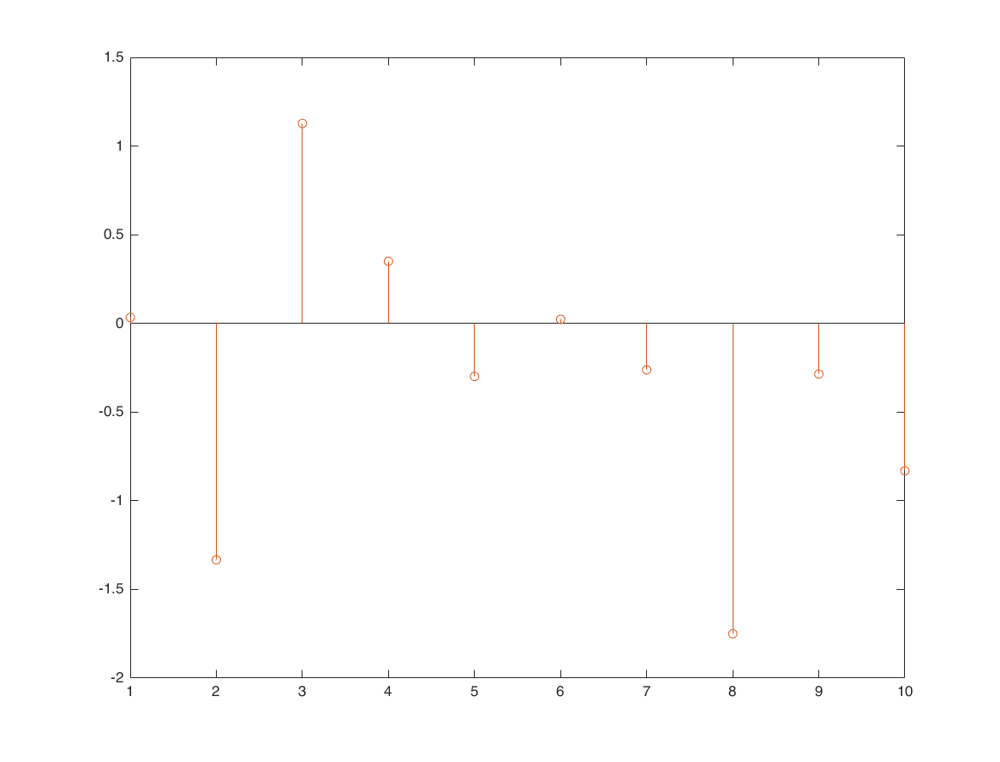
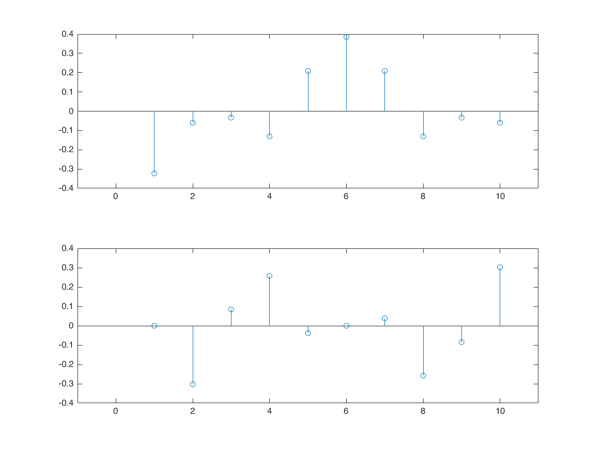
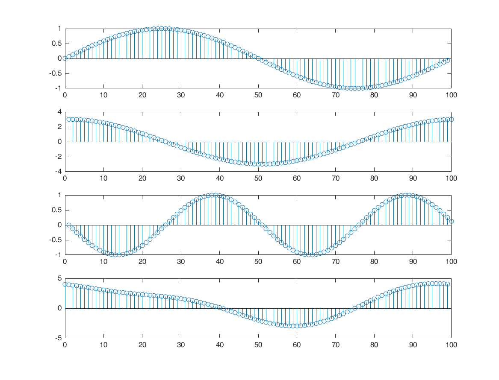
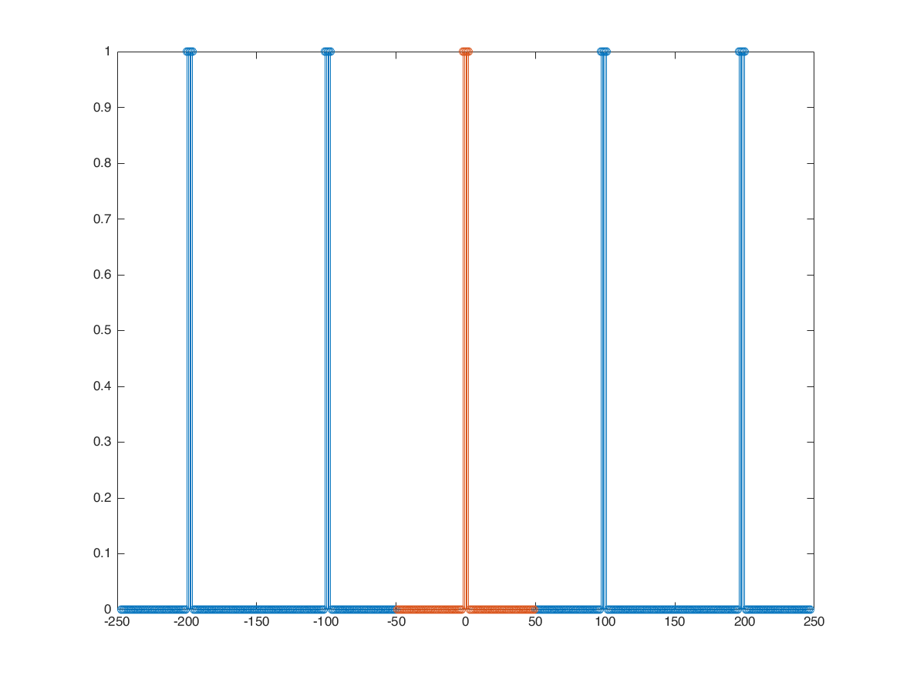
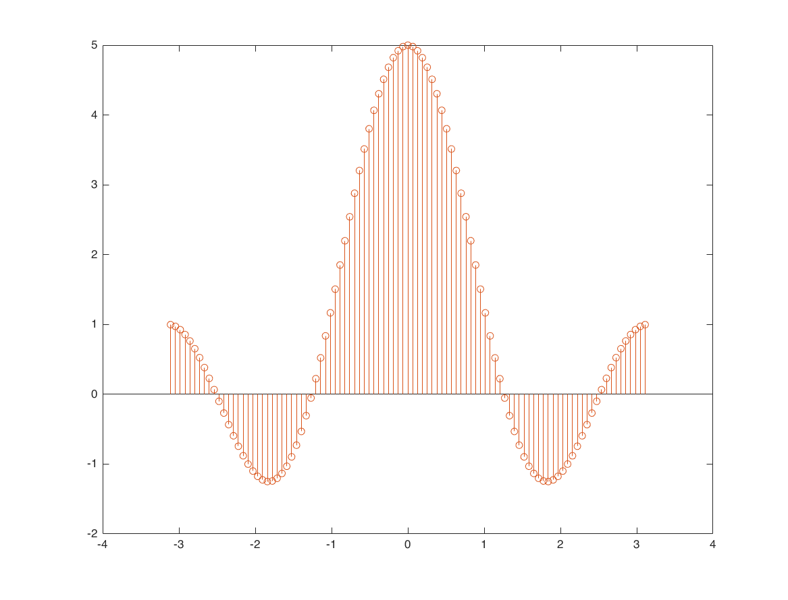
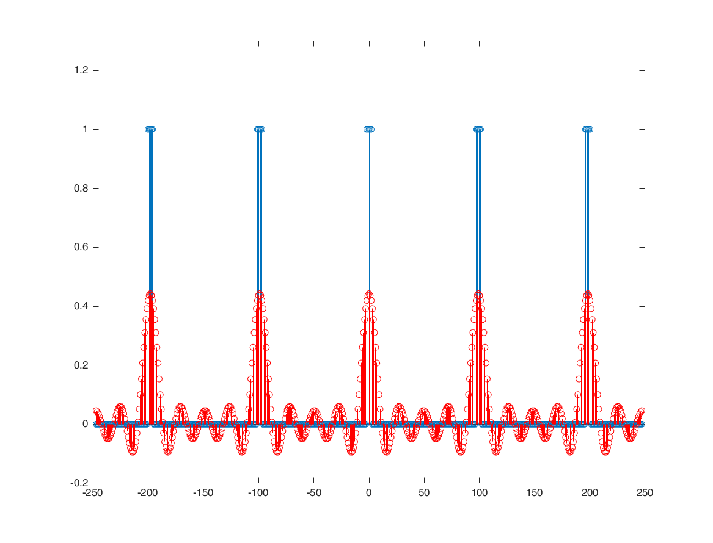
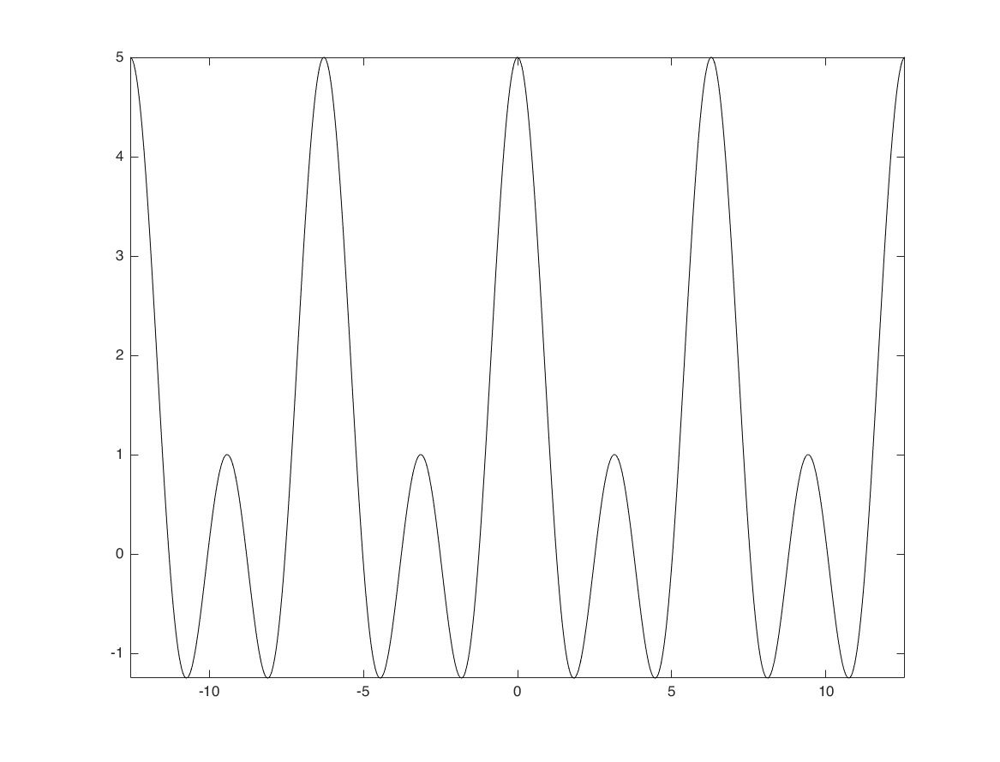

Contents
compare inverse DFS and original signal
figure
x = randn(1,10);
stem(x);
X=dfs(x,10);
x1 = idfs(X,10);
hold on;
stem(real(x1));
figure
subplot(2,1,1)
stem(real(X)); xlim([-1,11])
subplot(2,1,2)
stem(imag(X)); xlim([-1,11])
  DSF example with sine waves
N = 100; n = 0:1:N-1; x = 1+sin(2*pi*n/N)+3*cos(2*pi*n/N)+cos(4*pi*n/N+pi/2); figure subplot(4,1,1); stem(n,sin(2*pi*n/N)); subplot(4,1,2); stem(3*cos(2*pi*n/N)) subplot(4,1,3); stem(cos(4*pi*n/N+pi/2)) subplot(4,1,4); stem(n,x) X = dfs(x,N);
square wave train (periodic in time)
periodic square train
N = 99; % 11 17 41 73 N1 = 2; x0 = zeros([1 N]); nx0 = -(N-1)/2:1:(N-1)/2; x0(abs(nx0)<=N1) = 1; x = repmat(x0, 1, 5); nx = -(length(x)-1)/2:1:(length(x)-1)/2; figure stem(nx,x); hold on; stem(nx0,x0) % calculate DSF with DFS analysis formula k = nx0; a = x0*exp(-1i*2*pi/N*k'*nx0)/N; % calculate DFS with analytical method O = 2*pi*k/N; b = sin((2*N1+1)*O/2)./sin(O/2)/N; b(isnan(b)) = (2*N1+1)/N; figure stem(O,real(a)*N); hold on; stem(O,N*b) % you can increase N and see the effect. When we have N=9, we have 9 % sample in frequency domain. When we have N=11, we get 11 sample in % frequency domain, and etc. % Rule of thumb: Increasing N in time gives you denser sample in fequency. % this is apparent because Omega is getting denser. At the same time, k % change and is from -(N-1)/2 to (N-1)/2 (length=N). % Base on above: What happen if you increase N to infinity? % answer: the time axis becomes so dense that we get a continuous function. % Here we can see how time and frequency axis can be related! Increasing % the period in the time domain == increasing the number of samples (denser % frequency axis) in frequency domain. As long as the shape of one period % not change in time, the frequncy shape will not change. 
synthensis formula
c = (N-1)/2+1; k = 0; x0 = a(c+k)*exp(1i*k*(2*pi/N)*nx); figure stem(nx,x); ylim([-0.2,1.3]); hold on; stem(nx,real(x0),'r'); hold off; pause(1) k = 1; x1 = x0 + a(c+k)*exp(1i*k*(2*pi/N)*nx); k = -1; x1 = x1 + a(c+k)*exp(1i*k*(2*pi/N)*nx); stem(nx,x); ylim([-0.2,1.3]); hold on; stem(nx,real(x1),'r'); hold off; pause(1) k = 2; x2 = x1 + a(c+k)*exp(1i*k*(2*pi/N)*nx); k = -2; x2 = x2 + a(c+k)*exp(1i*k*(2*pi/N)*nx); stem(nx,x); ylim([-0.2,1.3]); hold on; stem(nx,real(x2),'r'); hold off; pause(1) k = 3; x3 = x2 + a(c+k)*exp(1i*k*(2*pi/N)*nx); k = -3; x3 = x3 + a(c+k)*exp(1i*k*(2*pi/N)*nx); stem(nx,x); ylim([-0.2,1.3]); hold on; stem(nx,real(x3),'r'); hold off; pause(1) k = 4; x4 = x3 + a(c+k)*exp(1i*k*(2*pi/N)*nx); k = -4; x4 = x4 + a(c+k)*exp(1i*k*(2*pi/N)*nx); stem(nx,x); ylim([-0.2,1.3]); hold on; stem(nx,real(x4),'r'); hold off; % a fun fact: because the frequency is descrete, we don't see % the Gibbs phenomenon. The gibbs happen when the frequency axis is % continuous and we can't capture and synthesize all of the frequency % components from the frequency domain to the time domain. % Here, because the frequency is descrete, we were able to eventually % return all of the frequency components from frequency domain to the time % domain.
Aperiodic Square Wave
N1 = 2; Omega = -4*pi:0.01:4*pi; X = sin((2*N1+1)*Omega/2)./sin(Omega/2); figure plot(Omega,X,'k'); axis tight;